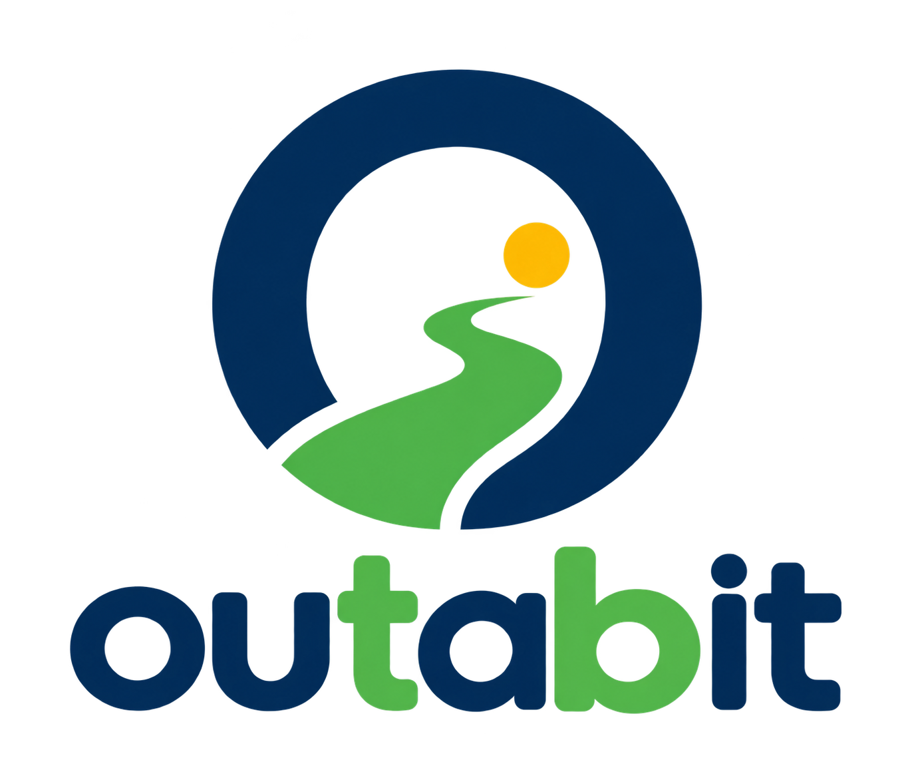
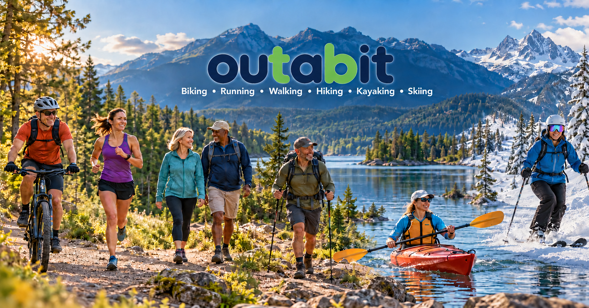

Route history
See the paths you have taken and revisit the outings you enjoyed.

Request beta accessiPhone + Android beta · access by request
A friendly way to track outdoor outings with GPS—at your pace, on your terms.
Beta access is handled personally by the outabit team. There is no public download yet.

Get outside a bit
Take 20 seconds to picture your next bit of time outside.
Press play to watch with music. The video will not start automatically.
A kinder kind of activity app
Choose the activity that fits the day. Set a personal goal by distance or active time, then let outabit keep the useful details together.
A simple rhythm
outabit is built to stay out of the way while you are outside—and be helpful when you look back.
Choose the outdoor outing you want to track with GPS.
Use distance or active time. Your goal is personal and stays in your control.
Build a route history, track your bike odometer, and share the outdoor memories worth keeping.
The useful details
Come back to the routes, milestones, and memories that matter—without turning every outing into a competition.
See the paths you have taken and revisit the outings you enjoyed.
Keep a practical running record of the distance on your bike.
Share the moments that make getting outside feel worth it.
Available now to iPhone beta testers in TestFlight build 53: outabit tracks outdoor outings with GPS rather than limiting you to a fixed activity list. Add and name activities, arrange or hide their Home buttons, and choose activity-specific goals and default dashboards.
Hiding an activity keeps its history. Android update pending.
Learn at a glance
These video spaces show how tutorials could live on the final site. They are intentionally non-playable in this preview.
Start here
Look back
A place to compare notes—not scores
Follow along for updates, share what is working, and help make the beta more useful for everyday time outside.
Ready when you are
Beta access is available by request for iPhone and Android. Tell us who you are and which device you plan to use, and we’ll prepare an email with your answers for you to review.
You still need to press Send. The website only opens a draft in your email app; it does not send or store your request automatically.
Tap the button below to choose Gmail or iOS Mail. Review the completed request and press Send in your email app—the website has not sent it. If no email app opens, copy these details into a new email to support@outabit.com.